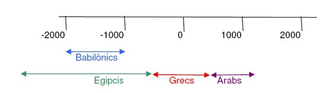
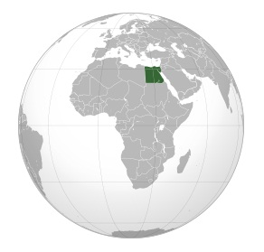
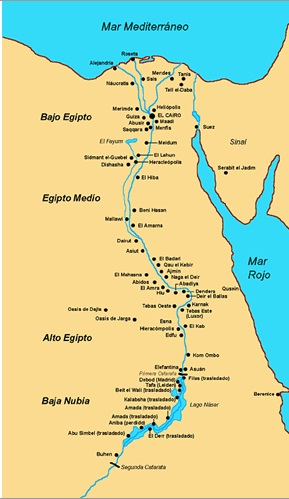
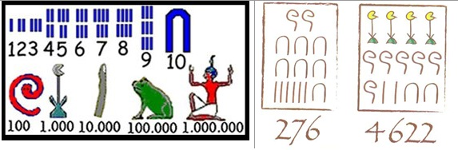
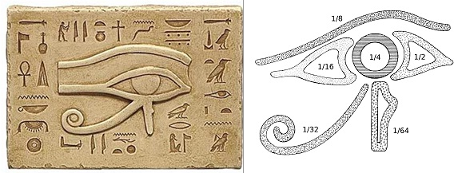
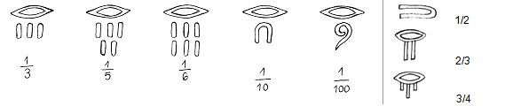

|
L’orígen de les fraccions
La paraula
fracció ve del llatí fractio,
utilitzada per primera vegada al segle XII, quan es va traduir a aquest idioma
l’obra Liber algebrae et almucabal
(813), de Muhammad ibn Musà al-Hwarizmi, matemàtic i astrònom, considerat com
el creador de les regles de l’àlgebra.
Però l’origen de
les fraccions és molt més antic; els babilonis les van utilitzar tenint com
únic denominador el nombre 60; els
egipcis ho van fer prenent com a únic numerador el nombre 1; i els grecs
marcaven amb una ratlla el numerador, i amb dues el denominador.
|

|
|
La recta del temps. Font: elaboració pròpia
|
Les fracions a l’Antic Egipte

|
Els primers habitants d’Egipte eren tribus
independents, que posteriorment es van reunir en províncies sota el govern
dels faraons.
La matemàtica egípcia està relacionada amb la
construcció de grans monuments. Tot allò que volien transmetre ho escrivien
en papirs, que són fulls de jonc assecat i pintat amb pinzell amb un
colorant.
Els egipcis tenien tres estils diferents d’escriptura:
els jeroglífics, l’estil hieràtic, utilitzat pels sacerdots, i l’estil
demòcrit, que era l’utilitzat pel poble. |
|
Situació d'Egipte.Font: Wikipedia
http://es.wikipedia.org/wiki/Egipto
|
|  |
El papir Rhind (2000-1800 a.C.) és la mostra
més important escrita en estil hieràtic. Fa 6 metres de longitud i
33 centímetres d’amplada, i actualment es troba al British Museum de Londres.
Conté 87 problemes matemàtics d’aritmètica, àlgebra i
geometria: fraccions, càlculs trigonomètrics, àrees i volums, progressions,
repartiments proporcionals i equacions.
Així els egipcis es van dotar d’una escriptura numèrica
basada en el sistema decimal que reproduïen sobre papirs i també sobre pedra,
amb escarpa i martell, o sobre ceràmica, mitjançant una canya amb la punta
xafada i mullada en colorants.
Els jeroglífics egipcis numerals es poden escriure
indistintament agrupant els símbols horitzontalment o verticalment per grups.
En les taules següents podem veure el sistema de
numeració egipci i alguns exemples de nombres. |
| Mapa d’Egipte. Font:
http://www.egiptologia.com/todo-para-viajar-a-egipto.html |
|

|
|
Sistema de numeració egipci. Font:
http://www.openzine.com/aspx/Zine.aspx?IssueID=20571
|
Exemples de nombres. Font: Matemàtiques 1. Editorial Casals
|
Però l’aportació
més interessant feta pels egipcis és sens dubte el coneixement de les fraccions.
Segons la llegenda, després de les crescudes del Nil desapareixien els límits
dels terrenys, i la geomatria va sorgir per tal de resoldre la restauració de
les propietats, fent necessàries les fraccions. Per representar-les s’utilitzaven
diferents parts del jeroglífic anomenat ull
d’Horus.
|

|
|
Ull d’Horus i fraccions associades al jeroglífic. La
doctina antiga deia que Horus era el deu del cel, i tenia per ulls el sol i
la lluna. Posteriorment Horus va perdre el seu ull esquerre, però gràcies al
deu Thot li fou substituït per un altre amb propietats màgiques . Font: http://elrincondeegipto.blogspot.com.es/
|
La resta de fraccions es denotaven amb la forma de la
boca, posat a sobre del nombre o al costat per indicar la fracció: una part de...
|

|
|
Simbologia i escriptura de les fraccions. Font:
Matemàtiques 1. Editorial Casals
|
Pots trobar més informació a: http://www.xeix.org/IMG/pdf_03_Egipcis.pdf
Anar a Activitats
|